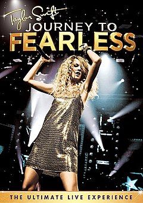

Desvendando "Fearless": A Jornada de Crescimento de Taylor Swift
"Fearless", lançado em 2008, marcou um momento crucial na carreira de Taylor Swift, levando-a aos holofotes do mainstream. Este segundo álbum capturou a essência do romance juvenil, rendendo a Swift aclamação da crítica e amplo reconhecimento.
Os singles icônicos do álbum, como "Love Story" e "You Belong with Me", mostraram o talento de Swift para contar histórias e letras relacionáveis. As canções ressoaram com o público de todas as idades, tornando-se hinos para os corações jovens.
O que diferencia "Fearless" é a capacidade de Swift de capturar emoções cruas em sua música. O álbum mergulha em temas de amor, desgosto e autodescoberta, criando uma conexão genuína com os ouvintes.
O sucesso comercial do álbum, combinado com suas conquistas vencedoras do Grammy, solidificou a posição de Taylor Swift como uma potência da indústria musical. "Fearless" não apenas mostrou seu crescimento como artista, mas também sua habilidade única de criar músicas que ressoam com milhões.
Anos após seu lançamento, "Fearless" continua sendo um clássico amado, lembrando aos fãs as primeiras raízes da artista e a jornada emocional que definiu a notável carreira de Taylor Swift.